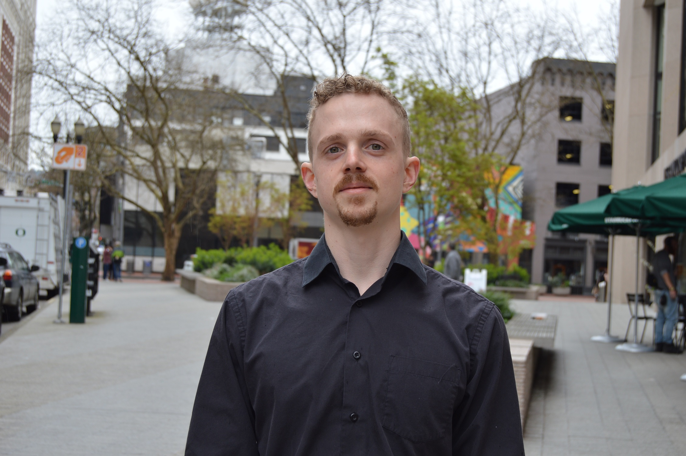

16112 SW 108th Ave, Apt #19
Portland, OR 97224 (503)516-4283 seanbenj@gmail.com
linkedin.com/in/seanbelliottmccrea | github.com/seanbenj
Hello! Welcome to my software developer portfolio!
In all of my job positions I have worked with other Team Members well and gotten along with them, trying to step in and help where I am able. When others have felt frusturated I have often been able to help motivate them.
I have always loved to be creative where possible, in and out of my home with art, story writing, philosophical conversations, making up games, cooking and group activities.
It has been a great enjoyment throughout my life to communicate with others and in most of my job positions I have had a chance to continue to use and grow my Interpersonal skills. Outside of work I have really enjoyed from small talk and banter, to an in depth conversation on thoughts and beliefs.
Sales/Sales Manager
Hawaiian Moon
(727) 709-9223
Dec 2016-Present
Skills Gained :
Relationship building,
Communication(P2P),
Organization,
Leadership/Management.
Telephone Sales
Consumer Energy Solutions
866) 253-9600
Feb 2012-Mar 2016
Skills Gained:
Relationship building,
Customer Service,
Communication (Email, Phone),
Organization.
Food Service Worker/Inventory
Natures Food Patch
(727) 443-6703
Jan 2012-Oct 2014
Skills Gained:
Relationship Building,
Customer Service,
Organization,
Leadership,
Time Management.
I grew up in Portland, Oregon. Very interested in communicating with other people, sharing ideas, concepts and I generally get along quite well with other people. Growing up I always spent plenty of time in the outdoors (camping, parks,) which I still do today! I love learning new skills and abilities that I can apply and use in the betterment of life!
I'm 28 years old, I have a wife and 3 daughters at home. I love being a father and husband; it truely gives you a new apprectiation for life and responsibilty in action, if you let it.
My belief is that life is all about how much determination you put into it, if you are persistent, always open to learn and achieve what you desire to achieve, then it will happen!

Linked IN GithubCheckout my family below